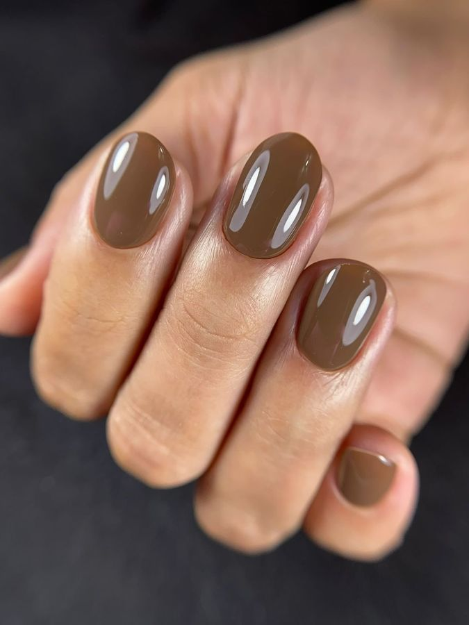
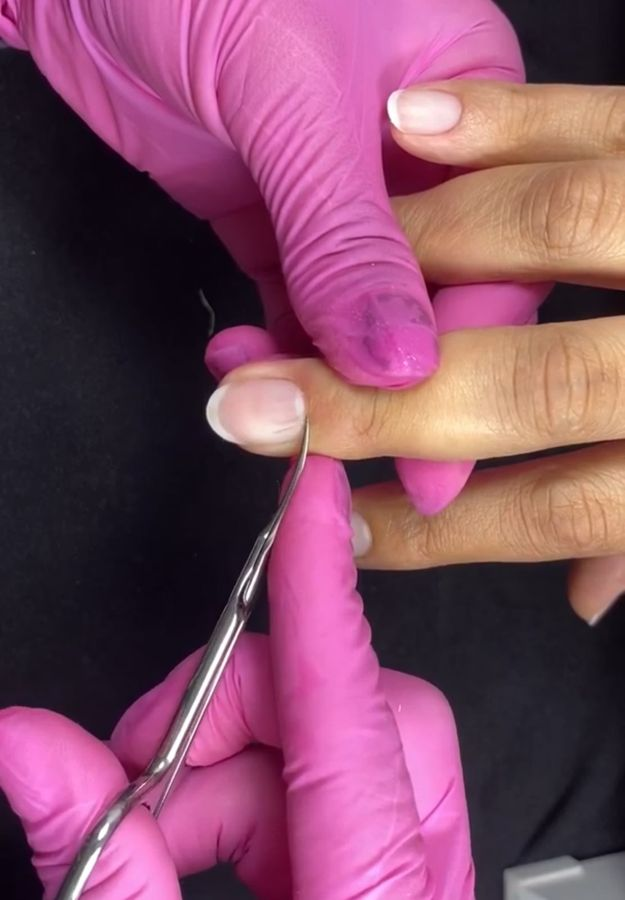
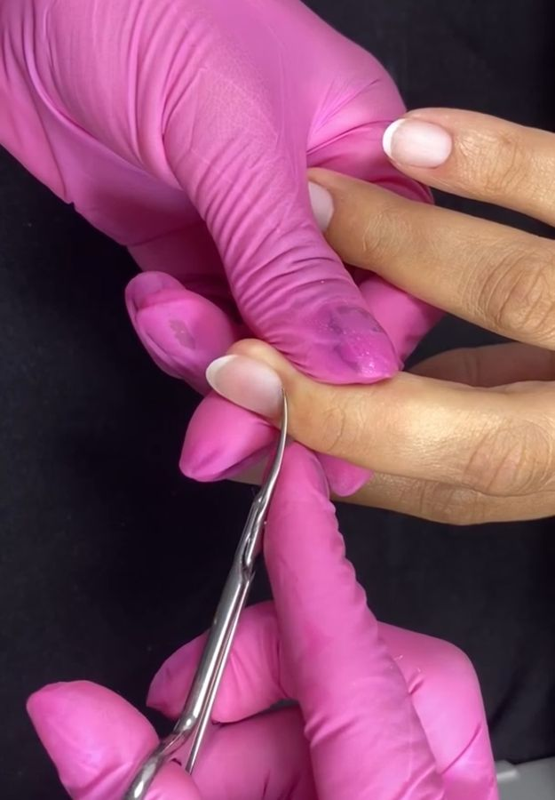

Aprenda a pegada certa, o ângulo de 90º e o movimento curtinho que faz a tesoura flutuar entre a unha e a pele, sem riscar a unha e sem medo de cortar a cliente. Com fotos reais de cada etapa.

Resultado com a técnica do ebookQuase sempre o problema não é a sua mão. É a preparação, a posição da tesoura e o tamanho do movimento. É exatamente isso que o ebook ensina.
Nada de ilustração genérica. Você vê a posição exata da tesoura em cada momento do corte, do início na lateral até a borda proximal, e compara com o que está fazendo na sua cliente.
Garantir meu ebook

Criadora do Método Manicure Perfeita, a Gisele reuniu neste ebook o que ela mais repete para as alunas na bancada: preparar bem, posicionar certo e cortar pouquinho de cada vez. Um material direto, pensado para você aplicar já no próximo atendimento.
Acompanhe as demonstrações no Instagram @giselevarelas.